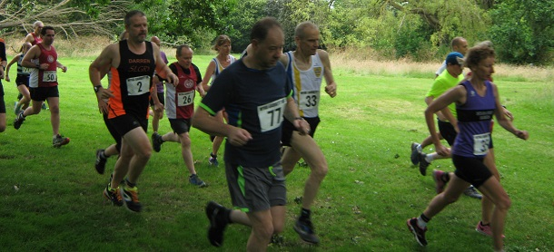

Pauline Dalton was first W45 (4th woman in 49:22) and Andrew Mead finished sixth (2nd M40 in 40:35) at the Bexley AC Myra Garrett 10k on 10 July. Jenny Austin (23rd woman in 58:50) and Simon Hallpike (28th in 46:43) also tackled the multi-terrain course at Danson Park in gusty conditions with light rain showers. Geoff Vine took the pictures. Results are here.
